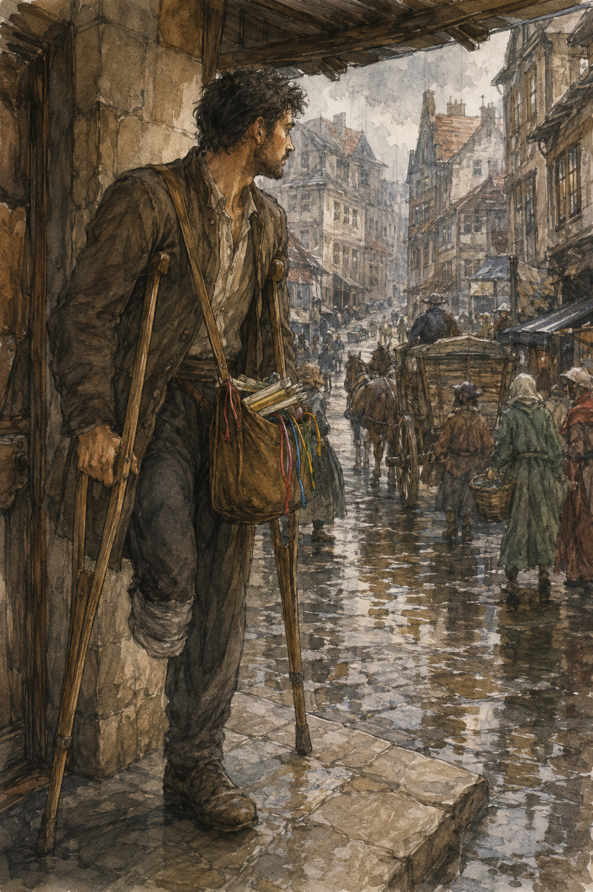
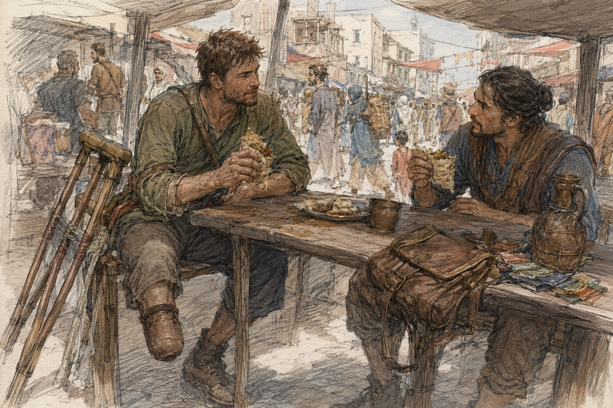

Sevren found me because I was sitting still.
This was apparently suspicious.
He came through the lodging door carrying a rolled oilcloth packet under one arm and stopped when he saw me at the front table.
“You sick?”
“No.”
“Hessa?”
“No magic today.”
“Pessa?”
“No.”
“Work?”
“No.”
He stared.
I stared back.
The keeper continued slicing bread.
Sevren looked at her.
“Is he all right?”
The keeper said, “Ate breakfast.”
“That doesn't answer it.”
“It usually does.”
I had eaten breakfast.
Twice.
The first had been porridge.
The second had been bread with the last of the onion eggs reheated badly enough that I had improved them with mustard.
My thumb had not tingled.
This was the no-magic day.
Hessa had made that explicit.
No draw.
No shaping.
No rehearsal.
No experiments.
The restriction did not forbid mustard.
I said, “Why are you here?”
Sevren put the oilcloth packet on the table.
“Need a runner.”
“You are a runner.”
“Need another one.”
“I am not a runner.”
“Today you are sitting.”
“That is not the same qualification.”
“Close.”
The keeper slid bread into a basket.
“What kind of runner?”
Sevren pointed at me.
“See? He understands commerce.”
“I understand words,” the keeper said.
Sevren unrolled the oilcloth.
Inside were six folded slips, each tied with a different color thread.
No packages.
No cargo.
No mystery stone.
Good.
“Messages?”
“Receipts and confirmations.”
“To where?”
“Carrow.”
“That is a city.”
“Yes.”
“Specific.”
He tapped the slips.
“Three west market. One tannery lane. One river office. One north gate warehouse.”
I looked at him.
“That is not one route.”
“Correct.”
“Why?”
“My second runner didn't show.”
“Your second runner?”
“Not mine. Hired.”
“Why didn't they show?”
“No idea.”
“Are they injured?”
“No idea.”
“Dead?”
“Probably not.”
“That is not reassuring.”
“I am not responsible for all missing people.”
Good boundary.
“What do you need me to do?”
“Take three.”
“Which three?”
“West market.”
I looked at the colored threads.
“Why me?”
“Because you know the west market, you can read, you can get signatures, and you are here.”
“That last one is doing a lot.”
“Yes.”
“How far?”
“Depends how badly you choose streets.”
“Time?”
“Hour and a half if you're ordinary.”
I looked down at my crutches.
Sevren followed my eyes.
“Longer.”
“How much longer?”
“I don't know.”
Good.
No false confidence.
“Ground?”
“Street.”
“Stairs?”
“One shop has two steps. Other two ground.”
“Carrying?”
“Three slips.”
“Return?”
“To me at the Guild before midday bell.”
“Pay?”
He named it.
Not insulting.
Not generous enough to turn three pieces of paper into destiny.
I considered.
This was work.
I wanted it.
That was immediate.
Not because I had declined Merrin yesterday.
Not because I needed to prove I still liked work.
Because messages moved.
Because there was a route.
Because someone needed them delivered before a bell.
Because Sevren had looked at me and seen a person who could do part of his problem.
“Which three?”
He smiled.
I hated that he knew before I said yes.
“Red, blue, yellow.”
“What are they?”
“Red to spice wholesaler on Copper Street. Blue to cloth factor two lanes south. Yellow to cooper near west gate.”
“Names?”
He told me.
I knew two businesses by location, not owner.
The third I had passed.
No new recurring person required.
“What do I say?”
“Hand slip. They read. If correct, they sign the bottom. Bring signed slip back.”
“If incorrect?”
“Do not solve it.”
“I wasn't going to.”
Sevren looked at me.
“I wasn't.”
“Bring it back unsigned. Tell me what they said.”
“Can I read the slips?”
“Yes.”
“Should I?”
“Yes. If you hand the wrong one to the wrong place, I will mock you professionally.”
I read.
Simple confirmations.
Quantities.
Dates.
Receipt of goods.
No secret information I cared about.
Red, spice.
Blue, cloth.
Yellow, barrels.
“Order?”
“Your problem.”
There.
That made it better.
I reached for the three slips.
Sevren pulled them back.
“Bag.”
“What?”
“You need a bag.”
“I have pockets.”
“You have three papers that cannot get wet.”
“It is not raining.”
The keeper looked toward the window.
Carrow was gray.
Not raining.
Yet.
Sevren said, “Bag.”
“I can tuck them inside the shirt.”
“No.”
“Why?”
“Sweat.”
Fair.
The keeper disappeared into the back and returned with a small worn shoulder satchel.
I looked at her.
“No.”
“It has a strap.”
“I can see.”
“You need a bag.”
“Why do you own this?”
“Because objects exist before you need them.”
Sevren nodded.
“Excellent philosophy.”
I put the satchel over my head.
The strap crossed my chest.
Bag rested against my right hip.
Wrong.
It interfered with the right crutch.
I moved it left.
The bag swung toward the missing side and slapped my thigh.
Not painful.
Annoying.
Shortened strap.
Better.
It rested high against my left hip, above the end of the residual limb, not touching it.
I moved around the table.
Crutches.
Turn.
Bag shifted.
Fine.
“Rent?” I asked the keeper.
“One bit.”
“For a bag you already own?”
“For returning it dirty.”
“What if I return it clean?”
“One bit.”
“Then that is not the reason.”
“No.”
Sevren laughed.
I paid the bit.
This felt correct.
The red, blue, yellow slips went inside.
Oilcloth flap over them.
Sevren tied the unused three back into his packet.
“Midday.”
“I know.”
“Do not run.”
“I know.”
“You will try.”
“I cannot run.”
“You can make bad decisions quickly.”
Also fair.
He left.
The keeper handed me bread.
“For road.”
“This is three streets.”
“Road.”
I took it.
Outside, Carrow smelled like wet stone and horse.
The rain from yesterday had left gutters dark and full.
No new rain.
Yet.

I stood under the lodging awning and built the route.
West market was not one point.
Copper Street sat north of the cloth factor.
The cooper was farther west near the gate.
If I did spice first, cloth second, cooper third, return east by the broad market road.
Shortest by map.
Not necessarily by crutch.
Narrow lanes had bad stone.
Broad market road had people.
Two steps at the spice wholesaler, Sevren had said.
Which meant probably spice first while fresh.
I stopped.
This was becoming a table in my head.
Useful table.
Allowed.
I went.
The first six minutes were easy.
Not effortless.
Never effortless.
Crutch tips found stone.
Right foot stepped.
Hands accepted pressure.
Satchel stayed mostly still.
I had become good enough at ordinary crutch travel that I could think about something besides each placement.
This was dangerous because the body remained capable of reminding me.
A cart cut too close at the corner.
I stopped.
Let it pass.
Continued.
No heroics.
Copper Street had two kinds of spice smell.
Good spice.
And whatever someone had burned.
The wholesaler had exactly two steps.
Sevren had not lied.
There was no rail.
I looked.
Two steps.
Not fourteen.
Still stairs.
One crutch up.
Right foot.
Second crutch.
Again.
Ugly.
Worked.
Inside, a clerk took the red-thread slip.
Read.
Frowned.
My brain leaned forward.
Problem.
Good.
“What?”
“Quantity's wrong.”
“What quantity?”
He pointed.
I read.
“Seventeen crates.”
“Sixteen.”
“Did you receive sixteen?”
“Yes.”
“Then don't sign.”
He looked at me.
“I know.”
“Good.”
He folded the slip.
I held out my hand.
He did not give it back.
“Tell Orin it was sixteen.”
“I will.”
“Tell him the fourth wagon had only three.”
I had no idea what that meant.
“Write it.”
“What?”
“On the slip.”
He looked offended.
“You're the runner.”
“Yes. Which is why I would like your words attached to your problem.”
He stared.
Then took a pencil and wrote beneath the unsigned line.
SIXTEEN. FOURTH WAGON THREE.
Initialed it.
Good.
I put red back in the satchel.
No solving.
No reconstruction.
No asking who loaded wagon four.
I was proud of myself.
This was ridiculous.
Down the two steps.
Slower.
Right foot.
Crutches.
Street.
My hands had begun the first mild warmth.
Fine.
Blue next.
The cloth factor was ground level.
The woman at the desk read the slip, signed, and handed it back without speaking.
Perfect customer.
I nearly thanked her for efficiency.
Did not.
Blue signed.
Yellow remained.
The shortest route to the cooper ran through a lane I knew.
I reached the entrance.
Looked down it.
Mud.
Not catastrophic.
Soft enough that the left crutch tip sank visibly under a passing man.
No.
Broad road.
Longer.
I turned.
The turn was ugly.
Worked.
Pessa did not appear from the sky to critique it.
Good.
The broad market road was crowded.
Not festival crowded.
Ordinary commercial crowded.
Carts.
Baskets.
People who believed stopping in doorways was a moral right.
I moved slower.
A child darted across.
Stopped.
A porter backed into my path.
Stopped.
A woman carrying flowers looked directly at me and moved half a step aside before I needed to ask.
Good.
Not kindness.
Traffic.
The cooper was working outside.
Three men rolled a barrel toward a rack.
I stayed out of the way.
This was another skill I had once undervalued.
A man came over wiping his hands.
“Delivery?”
“Confirmation.”
Yellow slip.
He read.
Signed.
Then looked at the satchel.
“Orin's?”
“Today.”
“Tell him next week's load needs morning.”
“What does that mean?”
“He'll know.”
“I won't.”
“You don't need to.”
Excellent.
I put yellow away.
Three destinations done.
One unsigned.
Two signed.
Now return.
I checked the sun.
Clouds.
Useless.
Bell had not rung.
Also useless because there were several bells.
I should have asked Sevren what time it was when I left.
Old problem.
Time estimates without clock.
I could ask.
I asked a fruit seller.
“Before midday?”
She looked at me like I had asked whether water was wet.
“Yes.”
“How long?”
“Half an hour maybe.”
Maybe.
Good enough.
Guild was east.
Half an hour ordinary.
Longer for me.
I wanted to move faster.
There it was.
Not magical.
Not philosophical.
Simple deadline.
I adjusted the satchel.
Started.
The right crutch slipped once on wet vegetable matter.
Not far.
Tip moved.
I stopped.
Looked.
Cabbage.
Of course.
White dog absent.
I laughed.
A man passing looked at me.
“Cabbage,” I said.
He did not care.
Correct.
I went around it.
Hands warmer.
Right shoulder fine.
Right calf fine.
Residual limb quiet.
My speed was not fast.
It was faster than wandering.
There was a difference.
At the next crossing a wagon blocked the broad route.
People squeezed around the rear wheel through a narrow gap.
I could fit.
Probably.
Crutches made width.
Satchel made less.
I could wait.
The wagon driver was arguing with someone.
Could be two minutes.
Could be ten.
Alternative lane north.
Stone decent.
One curb.
No mud.
I went north.
This was work.
I liked it.
Not the paperwork.
The route.
The constraints.
The little clock in the head.
Not solving the client's problem.
Solving mine.
Get three slips back.
Before bell.
Without falling.
Without turning my hands into meat.
This was a good problem.
I took the curb badly.
Not dangerous.
Just bad.
Right foot landed too close to the right crutch.
Had to reset.
Lost time.
I became angry.
At a curb.
Nineteen.
Good.
I muttered, “Fuck.”
An old woman beside a vegetable stall said, “It usually helps.”
I looked at her.
She kept arranging turnips.
No name.
Perfect.
I continued.
The Guild roof appeared between buildings.
Then the midday bell rang.
I stopped.
Fuck.
Not the Guild bell.
Temple bell.
Was that midday?
Could be.
Then another bell answered farther south.
Yes.
Midday.
I was late.
Not dramatically.
Still late.
I hated it.
I moved faster for twelve steps.
My right hand complained.
Not thumb tingling.
Palm pressure.
Different.
I slowed.
This was worse.
The Guild was right there.
I could make it in two minutes faster.
Maybe one.
The hand pressure was ordinary crutch pressure.
I knew ordinary.
Probably.
Hessa's restrictions were about symptom testing, not using my hands.
Still.
No.
I slowed.
The bell had already rung.
Late was binary for the immediate promise.
Being three minutes late instead of five did not justify making the next hour worse.
This was obvious.
I hated obvious things when they opposed me.
I reached the Guild.
Sevren was not at the front desk.
Merrin was.
“Orin?”
“Back room.”
I went.
Sevren sat at a table with the other three slips spread out.
Someone else had delivered them.
Good.
World survived.
He looked up.
“Late.”
“Yes.”
“How late?”
“I don't know.”
“Useful.”
“Midday bell rang near the turnip stall.”
“That is a location, not a duration.”
“I know.”
He held out his hand.
I gave him blue.
Signed.
Yellow.
Signed.
Red.
Unsigned.
He read the note.
“Sixteen.”
“Yes.”
“Fourth wagon three.”
“Yes.”
“Did you ask why?”
“No.”
He looked up.
Good.
“Why not?”
“You told me not to solve it.”
“I did.”
“He wrote the discrepancy.”
“Good.”
Sevren made a mark on his own sheet.
No praise.
Fine.
“What delayed you?”
I almost said disability.
Too broad.
“Route.”
“Specific.”
“West lane to cooper was mud. Took broad market road. Wagon blocked return. Detoured north. Also I was slower than your ordinary estimate.”
He nodded.
“Steps?”
“Two at spice.”
“Problem?”
“No.”
“Hands?”
“Warm.”
“Leg?”
“Fine.”
“Fall?”
“No.”
“Slip?”
“One crutch on cabbage.”
He stared.
“Cabbage.”
“Yes.”
“Dangerous profession.”
“White dog wasn't there.”
He did not know what that meant.
Good.
“How late?”
I asked.
He looked toward the wall clock.
There was a wall clock.
I hated Carrow.
“Seven minutes.”
Seven.
Bad.
Not catastrophic.
“Does it matter?”
“For these? No.”
“Then why deadline?”
“Because river office closes its receipt window at midday.”
“That was one of the other three.”
“Yes.”
I stared.
“You gave me the flexible route.”
“Yes.”
“You said before midday.”
“Yes.”
“Why?”
“Because I wanted all six back before midday.”
“That is not the same as required.”
“No.”
I was annoyed.
“Could have told me.”
“You asked return time. I told you.”
“That implies consequence.”
“It implies I wanted them then.”
I opened my mouth.
Closed it.
He was right.
I hated that too.
“Next time ask which deadline is hard.”
I stared.
“Next time?”
He counted coins.
My pay.
Full.
I looked at them.
“I was late.”
“Seven minutes.”
“You said midday.”
“And you brought all three back, with one discrepancy documented, without trying to fix it.”
“That is the job.”
“Yes.”
He pushed the coins toward me.
I took them.
No disability discount.
No heroic bonus.
Work.
“Would you hire me again?”
“Yes.”
Immediate.
That felt good.
Too good.
I looked away.
Sevren noticed.
Did not say anything.
Good friend.
“Not for every route,” he added.
There.
Better.
“Why?”
“Because some are stairs. Some are distance. Some need carrying. Some are fast. Some are bad ground.”
“Today?”
“Today was fine.”
“I was late.”
“You were seven minutes late on a soft deadline I failed to distinguish from a hard one.”
I looked at him.
“You admit error?”
“Write the date.”
“I need paper.”
He threw a scrap at me.
I laughed.
My right palm still felt warm.
Thumb normal.
Important distinction.
I did not test it.
Sevren gathered the slips.
“Want lunch?”
“Yes.”
“Good. You can pay.”
“Why?”
“You earned money.”
“That is not how friendship works.”
“It is today.”
We left the back room.
At the front desk Merrin looked at me.
“Work?”
“I just worked.”
“Good.”
Yesterday he had offered.
I had said no.
Today Sevren had offered.
I had said yes.
No contradiction.
This should not have felt revolutionary.
It did not.
Mostly.
Outside, Sevren chose a place selling fried fish folded into flatbread.
I bought two.
He bought one.
“Why two?”
“I ran messages.”
“You did not run.”
“Professional terminology.”
We sat on a low stone wall.
My crutches rested beside me.
Satchel still crossed my chest.
I had forgotten it.
“Bag,” I said.
“What?”
“I rented this.”
“From keeper?”
“One bit.”
“She owns bags?”
“Apparently objects exist before I need them.”
Sevren chewed.
“Deep.”
“I thought so.”
The satchel had a dark wet mark near the bottom.
Not rain.
Probably where it brushed a wall.
Keeper's one bit had become justified retroactively.
Annoying.
Sevren ate.
I ate faster.
The fish was hot enough to punish the tongue.
Worth it.
“What happened to your other runner?”
I asked.
“Showed up.”
“When?”
“After I found you.”
“Why late?”
“Mother needed him.”
“Fine?”
“Yes.”
“Then why did someone else do the other three?”
“He did.”
“Oh.”
Independent lives.
Again.
“Did he make river office?”
“Yes.”
“Hard deadline.”
“Yes.”
“Mine soft.”
“Yes.”
I pointed fish at Sevren.
“Say that next time.”
“I will.”
“Actually?”
“Yes.”
“Good.”
He pointed at my crutches.
“Say if route is bad next time.”
“I did.”
“Before.”
“I did not know.”
“Then ask more.”
“I asked ground.”
“You asked street.”
“You said street.”
“Exactly.”
“That was your failure.”
“Maybe.”
I laughed.
We ate.
After a while he said, “North road next week.”
I looked at him.
“What about it?”
“I have a run.”
“With cart?”
“Yes.”
“Dye works?”
“No.”
“Where?”
“Two villages. Maybe.”
“Maybe?”
“Route not final.”
I waited.
He ate.
“You asking me?”
“Not yet.”
Good.
“Why tell me?”
“You like the road.”
That landed somewhere clean.
“Yes.”
“I know.”
He did.
No speech.
No future plan.
Just known.
I finished the first fish flatbread.
Started the second.
My hands cooled.
Thumb quiet.
Residual limb quiet.
Right calf had begun to feel the route, but not badly.
I had worked.
I wanted lunch.
I maybe wanted the north road next week.
Tomorrow Hessa would still not see me.
Day after tomorrow she would.
Magic waited.
It did not vanish because I carried receipts.
Theatre did not arrive.
No one revealed a conspiracy.
A cabbage tried to kill me.
Seven minutes late.
Full pay.
Possible future work.
Good fish.
I looked at Sevren.
“Your knife is worse than Jorren's.”
He looked at the small utility blade he had used to cut his flatbread.
“What?”
“Jorren bought a food knife.”
“Why?”
“He wanted a better one.”
“Good.”
“You are all becoming intolerable.”
Sevren shrugged.
I ate.
The midday traffic moved around us.

For once, I had somewhere to be only after I finished lunch.
I finished lunch first.